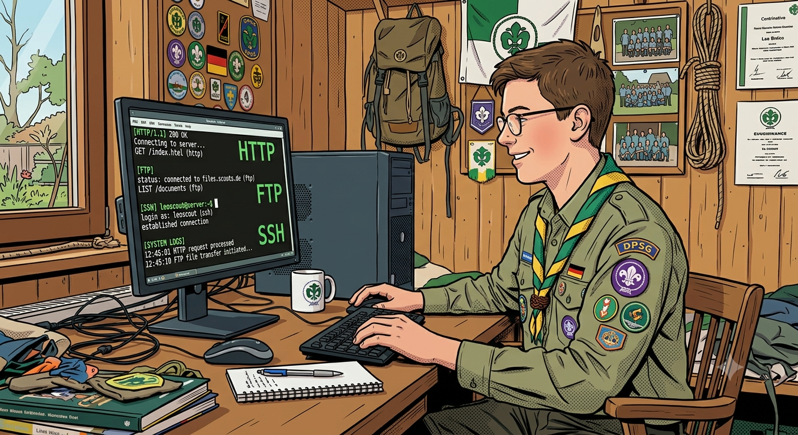

JOTAJOTI: Nethunt: Scouting the net
Die deutsche Version dieser Seite finden Sie hier.
You all know the Internet with its websites, game servers and streaming services.
But that is only a small part of the Internet. There are many more ways to distribute information online
than most people realize. This scavenger hunt will guide you through some of the most remote parts of the
Internet until you finally reach the goal and can add your name to the leaderboard.

The Internet supports many different protocols. You can usually recognize them by the keyword at the
beginning of the address, which is called the URL. Right now your browser is using the HTTP protocol. If
you double-click the address bar you can see that the URL begins with
https://.
That stands for Hypertext Transfer Protocol Secure, the encrypted version of HTTP. "Hypertext" means you
mostly see plain text, but some words (tags) are special "hyper-words" that trigger browser functions,
for example opening a clickable link, displaying an image, or formatting text as
bold,
italic
or
underlined.
The language used is called HTML (Hypertext Markup Language). This is the ordinary Internet or WWW (World
Wide Web) that everyone knows. You may also have come across other keywords besides http:// or https://.
This game will lead you from server to server around the world until you reach the destination. Each of
these servers uses a different protocol. Some can be accessed directly in your browser. For many others you
will first need to install a client that understands that protocol. Your task is to identify the protocol
from the keyword and figure out how to connect to that server. You may use anything you like: Google, AI,
books, your own knowledge, etc.
On many servers you will need to log in. The credentials are always the same:
Username: DO1EH
Password: JOTAJOTI26
Pay attention to upper- and lower-case letters!
General note:
For some protocols there is a proxy or plugin that makes the protocol accessible in the browser.
Please do not use these, as the presentation is often poor and can distort text and images.
It is best to use a dedicated client or a browser that supports the protocol directly. Only then will you
get the authentic experience of how it felt to work with these protocols back in the day.
By the way: In the past this scavenger hunt would have been rather boring, because Chrome, Firefox and
other browsers used to support all these protocols by default. You would simply enter e.g. ftp://xxxx in
the address bar. Nowadays they are considered insecure because they are old and have security issues.
For security reasons they were removed from browsers, so today you need a separate client for each
protocol.
Now let's go! The first URL to continue is:
ftp.drivehq.com